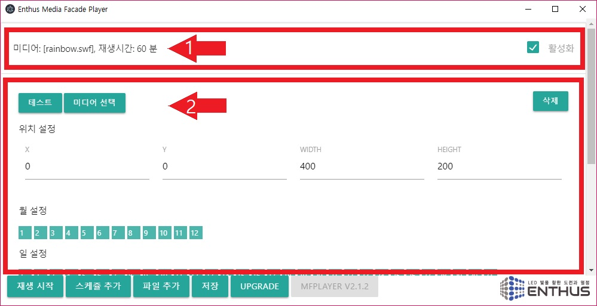
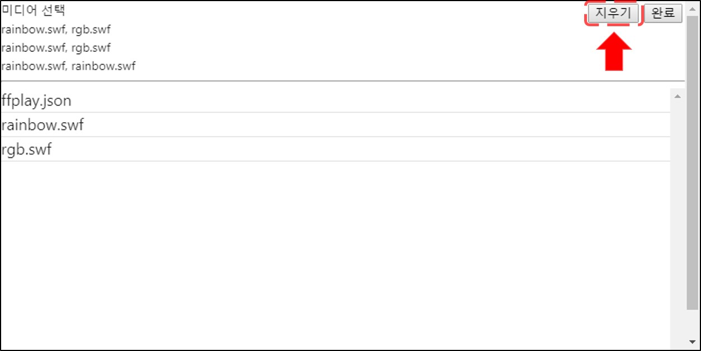

스케쥴 추가
하단 메뉴의 스케쥴 추가 버튼을 누르면, 모든 시간에 활성화되어 있는 기본 설정으로 새로운 스케쥴이 추가됩니다.

편집
스케쥴을 클릭하면 스케쥴 편집창이 열립니다.

테스트, 미디어 선택, 삭제, 위치 설정 및 시간 설정에 대한 메뉴가 나타납니다.

미디어 선택
미디어 제목을 클릭하면 미디어 선택 창이 나타납니다.

창의 상단에는 이전에 설정된 값이, 아래에는 선택가능한 파일 리스트가 표시됩니다.
Note
새로 추가된 스케쥴일 경우 기본으로 rainbow.swf 가 선택되어 있습니다.
Group Play
MFPlayer 에는 여러개의 미디어 파일을 같은 설정으로 재생할 수 있는 Group Play 기능이 있습니다. 원하는 미디어 파일을 선택하면 차례대로 상단의 선택 리스트에 미디어 파일명이 표시됩니다.

오른쪽 상단 완료버튼을 눌러 선택을 종료합니다.

스케쥴 제목에 선택된 파일 리스트가 표시되고, 각 미디어의 재생 시간이 표시됩니다. 재생 시간은 전체 활성화된 분 시간의 개수를 미디어의 개수로 나눈 값으로 설정됩니다.

Example
- 60 분 활성화 / 2 개의 미디어 파일 선택 = 재생 시간: 30 분
- 30 분 활성화 / 2 개의 미디어 파일 선택 = 재생 시간: 15 분
- 30 분 활성화 / 5 개의 미디어 파일 선택 = 재생 시간: 6 분
- 30 분 활성화 / 7 개의 미디어 파일 선택 = 재생 시간: 4 분 (7 번째 파일은 6 분 재생)
- 10 분 활성화 / 11 개의 미디어 파일 선택 = 재생 시간: 1 분 (11 번째 파일 재생 안됨)
선택을 취소하려면 상단 오른쪽의 지우기 버튼을 눌러 차례로 삭제합니다.

위치 설정
미디어가 재생될 위치와 가로 세로 크기 정보를 입력합니다.

테스트
선택된 미디어와 위치 설정이 올바르게 되었는지 확인하려면 테스트 버튼을 누릅니다. 아래 메인 메뉴의 정지 버튼을 통해 테스트를 멈출 수 있습니다.

삭제
삭제 버튼을 클릭하면 경고메시지와 함께 스케쥴이 삭제됩니다.

활성화
스케쥴을 지우지 않고 사용하지 않는 상태로 유지하려면 활성화 박스를 클릭해서 상태를 바꿉니다. 활성화 되지 않은 스케쥴은 정해진 시간에 재생되지 않습니다.

시간 설정
Note
MFPlayer 는 반복 재생을 위한 시간을 설정합니다. 시간 설정 버튼이 선택되어 있는 시간에만 반복적인 재생을 합니다.
스케쥴 편집창을 스크롤해 내리면 월, 요일, 일, 시간, 분 설정 버튼을 선택할 수 있습니다.
매년 1월 일요일에만 저녁 6시에서 8시사이에 30동안만 미디어가 재생할 경우 아래의 그림과 같이 설정합니다.

일년동안 저녁 6시에서 밤 12시까지 재생하는 예시는 아래와 같습니다.

일년동안 저녁 9시에 5 분동안 재생하는 예시는 아래와 같습니다.